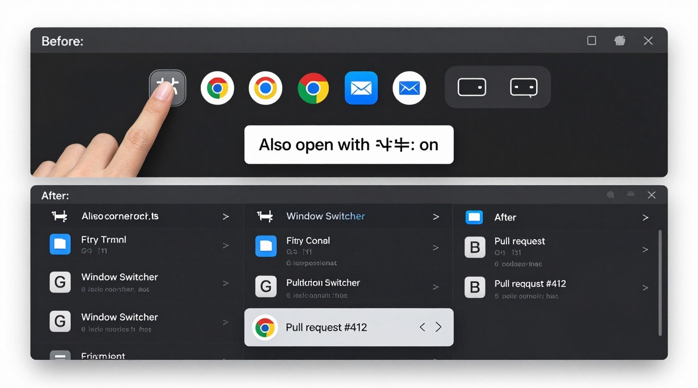
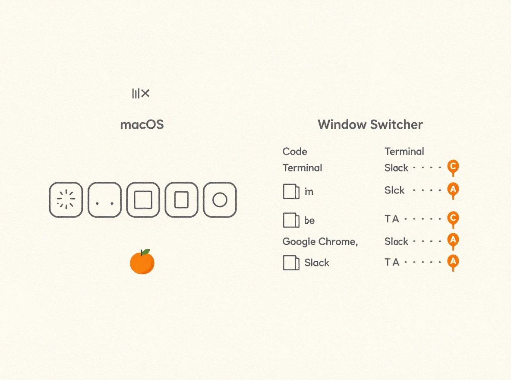
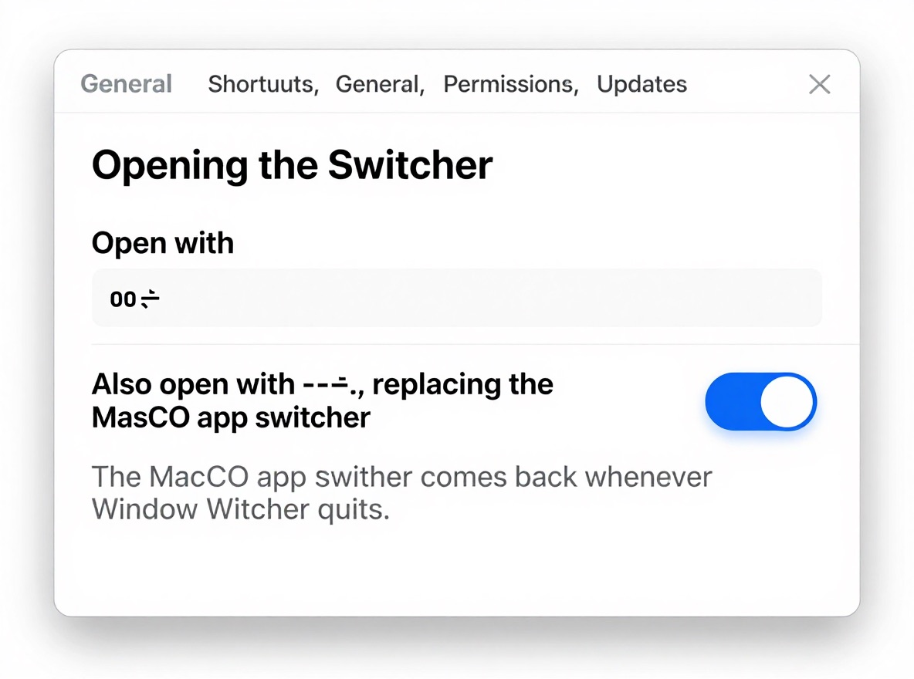

Features / Replace ⌘⇥
Replace ⌘⇥Keep your ⌘⇥ habit. Get every window.
Turn on one setting and Command-Tab opens Window Switcher instead of the macOS app switcher. Same keys under your thumb, and now every window is a key away.
● Off by default. Quit and the macOS switcher is back

AI draft · replaceThe shortcut you know, with windows in it.
⌘⇥ in macOS switches between open apps. To reach a particular window you then press ⌘` until it comes up. With this on, ⌘⇥ shows every app and every window, on every Space, each with its own key.
- It waits for you. Let go of ⌘ and the list stays open until you press a key.
- ⌥⇥ keeps working. Both shortcuts open the same switcher.
- No extra permission. Opening the switcher, ⌘⇥ included, needs none.

AI draft · replaceThe macOS switcher is one click away.
Turn the setting off and the macOS switcher works again straight away. Quit Window Switcher and it's back too, whichever way you quit.
- Quit from the menu bar. ⌘⇥ goes back to macOS.
- Quit from Activity Monitor or the Terminal. It's handed back the same way.
- Nothing else changes. Only ⌘⇥ and ⇧⌘⇥ are taken. Mission Control and your other shortcuts stay as they are.

AI draft · replaceSettings that change it.
In Settings → General.
Good to know.
How do I get the macOS switcher back?
Turn off "Also open with ⌘⇥, replacing the macOS app switcher" in Settings → General, or quit Window Switcher. Either way ⌘⇥ goes straight back to macOS.
Does ⌥⇥ still work?
Yes. ⌘⇥ is added alongside it, and both open the same switcher.
Does it need a permission?
No. Opening the switcher, with either shortcut, needs no permission. Accessibility is only needed to list and switch windows.
Can I still hold ⌘ and tap ⇥ like before?
Yes. Hold ⌘ and press ⇥ to move the selection down the list, then press ↩. Or let go, and press the key you see.
Press ⌥⇥. Then the next key you want.
Free for the Mac. No account, nothing running in the background, and every app has a key the moment it's installed.
Download Window Switcher for Mac